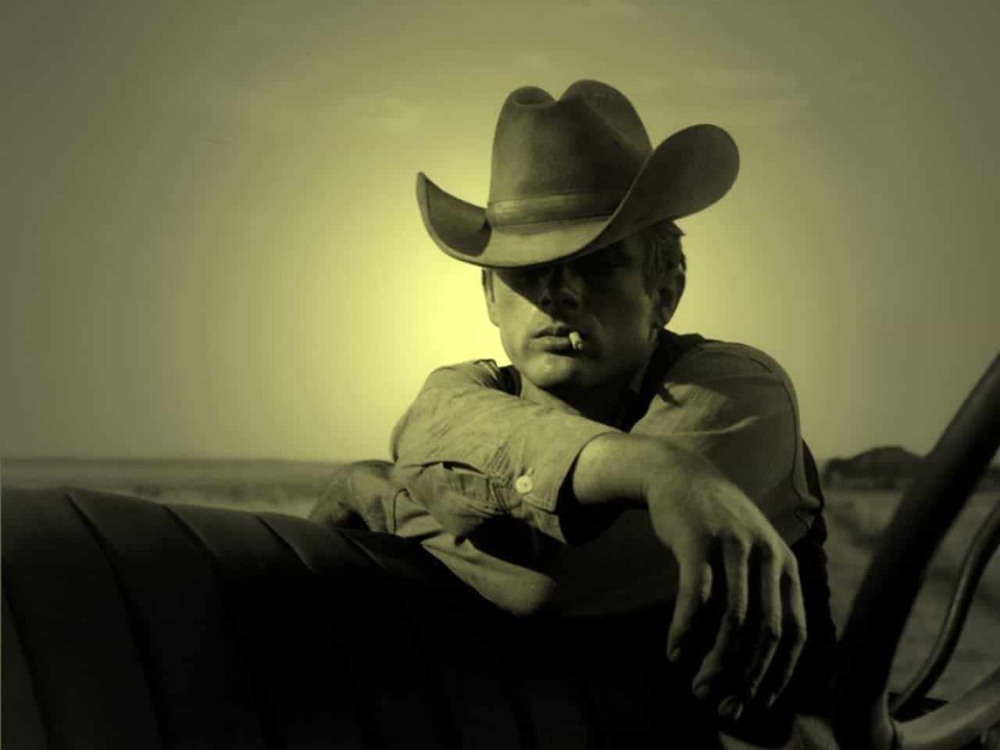

Peter Blackmire is a writer who has lived and travelled throughout America. He believes that America and the freedom it respresents is the greatest culmination of the Western tradition.


Men looking for truth and inspiration about romance, dating, and marriage should consider examining the treasure trove of stories and testimonials that comprise the canon of classic country music.
Classic country celebrates the rugged individual American setting forth into the unknown vagaries of life. This includes the archetype of the lonesome cowboy journeying into the unforgiving frontier to discover his fortune. The hardscrabble trucker who traverses the sprawling and perilous highways of the nation – chatting up truck stop waitresses in countless towns along the way. The down on his luck gambler who only needs another shot and a change of luck to get back on the winning side of life. But few genres of music are populated with as many convincing and revealing songs about heartbreak and mistreatment by womenkind as classic country.
The songs don’t always have to be serious or downtrodden in spirit. ‘She Got the Goldmine (I Got the Shaft)’ by Jerry Reed is a comedic testimonial to the gynocentric bias of the divorce courts.
More than just a litany of complaints, the lyrics rattle off what would be considered chauvinistic observations by today’s standards, in such an offhanded way that every time I hear this song I break out in good natured laughter. For example, take the opening lines, where the singer confesses his true motivation for proposing.
Well, I guess it was back in ’63
When eatin’ my cookin’ got the better of me,
So I asked this little girl I was goin’ with to be my wife.
This line strikes me as funny for both its humble honesty and its old fashioned assumptions. Proposing marriage to a girl you’re dating because you’re tired of preparing your own meals seems like as good a reason as any, I guess. Of course women seldom cook for men on a regular basis now, so that throwback is a nostalgic glance into a traditional way of life.
In my current relationship, I do the majority of the shopping and cooking for my little lady, so I can only shake my head and chuckle. Unfortunately for our protagonist, the next stanza reveals the cautionary morale of the song.
Well, she said she would, so I said “I do”.
But I’da said I wouldn’t if I’da just knew
How sayin’ “I do” was gonna screw up all of my life!
Eventually their love diminishes and Reed inevitably comes home to the locks on the front door having been changed. The chorus of the song expands on the tragicomic nature of the title.
She got the Goldmine, I got the shaft.
They split it down the middle
Then they gave her the better half.
The inequity of divorce settlements has never been summarized more succinctly or hilariously then in these few lines. Reed goes on to lament his post marital lifestlye.
While she’s livin’ like a queen on alimony,
I’m workin’ two shifts eatin’ baloney,
Askin’ myself, “Why didn’t you just learn how to cook?!?!”
This song is an anthem for divorced men sleeping on futons throughout the nation, struggling to make alimony, while their exes enjoy the fruits of the settlement. Incidentally, of the many inequalities feminists rail about I have yet to hear much about leveling the playing field in this regard.
Country has its share of cheating songs. This vast storehouse of testimonials covers the thrill and guilt of behaving badly and the fear of being found out. What is refreshing about this corner of the classic country music catalog is the abundance of songs about men catching their women in the act and the heartbreak and disillusionment that follows. The vulnerability that songs like this entail is generally missing from the contemporary landscape where men often assume the role of boasting of their conquests while women take on the mantle of victimhood and vindictiveness. Consider the lyrics to Carrie Underwood’s more recent hit ‘Before he Cheats’.
Took a Louisville slugger to both head lights
I slashed a hole in all four tires
Maybe next time he’ll think before he cheats
Here the feminine hero is praised for bashing up a car. This act of petty vandalism is supposed to represent the height of feminine empowerment. Of course, she betrays no feelings of guilt or remorse, and there is no consequence for her actions. The guy, after all, deserved it.
Compare this to Porter Wagoner’s chilling confession in ‘The Cold Hard Facts of Life’.
In this dark tale, Porter returns from a business trip a day early to find his wife partying with a bunch of strangers in his home. Porter pulls a knife and dispenses with the strangers. The song ends with him rotting in a jail cell and contemplating an eternity spent burning in hell.
Lord, you should’ve seen their frantic faces
They screamed and cried, please put away that knife
I guess I’ll go to hell or I’ll rot here in this cell
But who taught who the cold hard facts of life

This is a song not about petty revenge but about life and death choices and the heavy consequences that follow. Still, lurking on the edges of this song, as with all classic country is the call for understanding, the possibility of forgiveness, and the faint hope for redemption.
Read More: Top 24 Country Songs From The Genre’s Five Best Singers